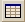

The Tolerance Data Table contains editable and non-editable cells. The first five columns (Parameter Name, Nominal, Minus, Plus, and Distribution Type) are non-editable, and the remaining cells are editable. You cannot manually add or delete rows from the table.
To hide or show the Tolerance Data Table window, click the Tolerance Data Table button  on the Tolerance Editor toolbar.
To update the contents of the Tolerance Data Table to reflect changes made in the
tolerance editor window, click the Tolerance Table Update
button  .
.
The following table describes the tolerance data table in the Editor.
| Column Name | Description | Default | Type |
| Object # | Object number | - | Static |
| Object Type | Name of ASAP command containing assigned tolerance | - | Static |
| Object Name | Name of Object | User-defined | Static |
| Parameter Name | Name of ASAP command parameter | - | Static |
| Nominal | Assigned value | User-defined | Static |
| Minus* | Minimum value | - | Dynamic |
| Plus* | Maximum value | - | Dynamic |
| Distribution Type |
Statistical distribution types: Normal-Gaussian, Uniform | Uniform | Dynamic |
| Std. Dev | Standard Deviation | User-defined; used only if Normal-Gaussian distribution type is selected | Dynamic |
| Irregularity* | Irregularity of the lens (fringes). Applies only to optical lenses | - | Dynamic |
| Wavelength | Reference wavelength (nanometers) | 633 | Dynamic |
| Wedge* | Wedge of the lens (millimeters). Applies only to optical lenses | - | Dynamic |
| Element Tilt* | Tilt of lens (arc-min). Applies only to optical lenses | - | Dynamic |
| Element Decenter* | Decenter of lens (millimeters). Applies only to optical lenses | - | Dynamic |
Static = Value in cell cannot be changed
Dynamic = Value in cell can be changed
*Defaults for parameters such as Radius, Diameter, Plus, Minus, Wedge, Irregularity, Tilt and Decenter may be changed by selecting Tolerancing Defaults on the Tools menu.